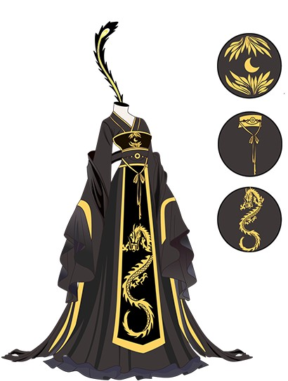
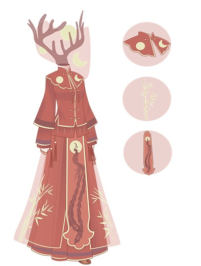
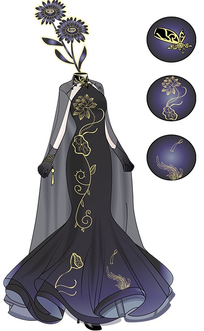
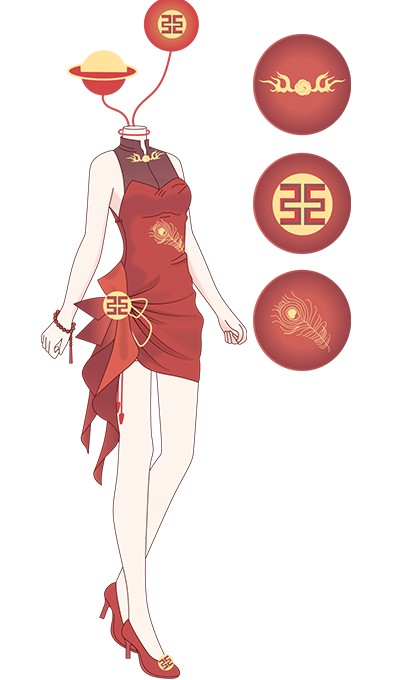
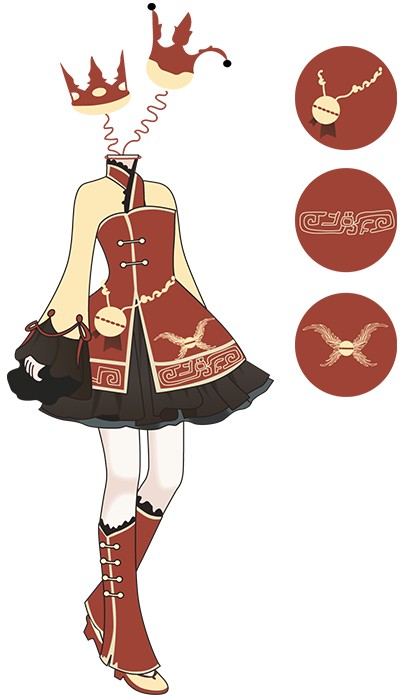
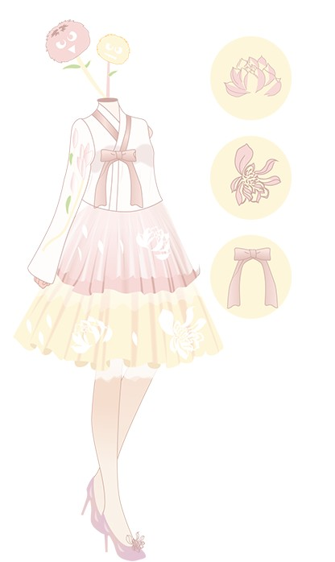

This black robe is inspired by the Chinese Ming
dynasty dress. It combine with wide sleeves, long
towe and dragon robe. So it is made of black silk
and gold thread. The whole design combines a
contemporary fashion brand Louis Vuitton to
bring some modern fashion element.
This red dress is inspired by the Chinese Qing
dynasty dress. It combine with slim, cloud
shoulders and Phoenix robe. It is made of red
silk rungra and gold thread. The whole design
combines a modern brand Alexander McQueen
to bring some modern color.
This black dress comes from the period of the
republic of China. It combine with Chinese
triditional cheongsam, so it is made of silk and
thread. The final design are made from Chinese
triditional pattern combine with modern brand
Dolce & Gabbana make this dress more moving.
This short red cheognsam comes from 1940s-1960s AD. It’s very modern so this dress are more
short. It is closer to modernization also combins
Chinese triditional design. It is also combine with
modern fashion brand Chanel make this dress are
more fashionable.
This colorful skirt come from Southern and Northern
dynasties. So it has wide sleeves and flowerpot
bottom shoes. People who wear this cute dress will
look more graceful. Meanwhile, this clothes also
combines a modern fashion brand Kenzo, so whole
design are looks more young like this brand.
This gentle and lovely dress come from Chinese
Tang dynasty. It has tulle skirt and a kind of
Chinese-style jacket. This clothes are made of
grass cloth and silk. The color and pattern have
new looking, also combine with modern brand
Fendi to bring a different sence of triditional clothes .